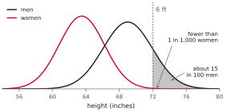
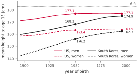
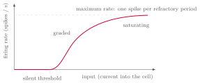
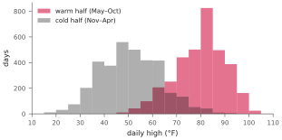
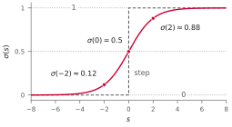
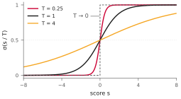
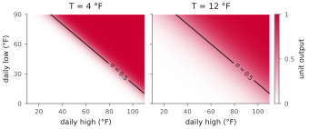

NJIT · CS 301 · INTRODUCTION TO DATA SCIENCE · FALL 2026 PDF
Meeting 3. Confidence Instead of Certainty
Act 1 An Uncertain World · Act 2 Real Data Is Not a Truth Table · Act 3 The Sigmoid Function · Act 4 Wrong, With a Probability
Meetings 1 and 2 built a unit that answers \(1\) or \(0\) and checked it against a truth table. This meeting turns toward a real dataset, recorded a few miles from campus, and a unit that answers with a probability. This lets us express how sure the unit is about its prediction.
Act 1. An Uncertain World
1.1 Six feet tall
Two people are each six feet tall. One was born in 1950, the other in 2000. From height alone, how confidently could you predict whether each person is male or female? In class the question was phrased as “XX or XY?” The height survey below records sex, not chromosomes, so its estimates concern the male and female categories in that survey.
The first thing to settle is not the answer but the kind of answer. Can you be sure? No. There are women who are six feet tall, so height alone does not settle the answer. What you can have is a level of confidence: “I would put 90 percent on male,” or some other number. Asked for that number in class, the room offered a range — one student said about 50 percent, perhaps a little more; another said 89. Nobody said 100, and nobody should have.
Measurements let us estimate that probability for a particular population.

The curves approximate adult height distributions in the United States — women on the left, men on the right — using a national survey that measured heights. In these normal approximations, about 15 in every 100 men reach six feet, compared with fewer than 1 in 1,000 women. These are areas under the curves to the right of 72 inches.
For someone whose height is near 72 inches, compare the heights of the two curves there instead. Their ratio is about 75 to 1. Assuming equal numbers of men and women in the population we sample, this gives \(75/(75+1) \approx \textbf{0.99}\) for male. At \(5'9''\) the same calculation gives about 0.88. These are estimates from a model; they depend on the population, its proportions, and how well the curves describe it.
The curves: NHANES 2015–2018 (Fryar CD, Carroll MD, Gu Q, Afful J, Ogden CL, Anthropometric reference data for children and adults: United States, 2015–2018, Vital Health Stat 3(46), 2021), adults 20 and over; drawn as normal approximations to the survey’s percentiles.
1.2 Does the year of birth change it?
The second piece of information looks as if it should move the number. People born in 2000 grew up with better food and medicine than people born in 1950, so surely they are taller, and surely that shifts the curves. One student’s instinct in class was that it would change the answer a little, not a lot. The United States data show little change in mean height between these cohorts. Means alone, however, do not tell us whether the probabilities are unchanged.

The plot shows mean height at age 18 by year of birth, over a century. In the United States, men born in 1950 and 1996 both average about 177 cm; the corresponding averages for women are 163.4 and 163.5 cm. The growth happened earlier, then largely levelled off. In South Korea the same plot is still climbing: women born in the 1990s are about 6 cm taller than women born in 1950, and men about 7 cm taller. Populations can move the other way too. A family example came up in class: in the instructor’s family in Greece, those who grew up during and just after the war of the 1940s were shorter than their parents, following years of poor nutrition. That is a family recollection, not an estimate for the whole country.
So the second data point does matter, just not in the way the question suggested. It matters because the probability was never a property of six feet alone. It belongs to six feet in a population, and the population is a matter of place and time. The same measurement, taken in Seoul in 1950 and in Newark today, carries different odds. This is why the source of the data matters: a curve drawn from the right population and the right decade answers a question that the same curve drawn from the wrong one gets wrong.
NCD Risk Factor Collaboration, A century of trends in adult human height, eLife 5:e13410 (2016) — mean height at age 18 by year of birth, 1896–1996; the last cohort in the data is 1996, which is why the plot and the text say “the 1990s.”
1.3 Certain, or confident?
Place this beside the gates of meeting 1. A gate’s world is 0 or 1: the same input gives the same answer every time, and the answer is complete. The world a cell lives in is nothing like that. Heights are modeled as continuous quantities. Measurements are noisy. And a measurement is ambiguous: the same six feet is compatible with more than one answer. In such a world the best possible answer from height alone is a degree of confidence — how much.
You make judgments like this all day: you can choose an answer while remaining unsure. Your hesitation on an ambiguous case is a familiar way to think about confidence, without assuming that the brain literally calculates the probability in our example.
1.4 The cell is not all-or-none either
Meeting 1 reduced the cell to a device that fires or does not. That was a simplification, and it is time to give some of the reality back.

In this schematic, below its threshold the cell is silent. Above it, the cell fires spikes at a rate that rises with the input — a graded response, not a switch. And the rate does not rise forever: it saturates. A cell has only so much energy, and after each spike it needs a recovery interval, the refractory period, before it can fire again. This limits its firing rate; the rates and recovery times differ by cell type. The response drawn here is therefore graded and bounded at both ends: it answers how hard, on a scale from silence to a ceiling. The arithmetic unit of meeting 1 kept the threshold and dropped the grading: it answers \(1\) or \(0\). As it was put in class, we will give the arithmetic unit back a little of the cell’s messiness. A graded output suggests a way to express confidence. This is an analogy: a biological cell’s firing rate is not itself a class probability.
The firing-rate curve is a schematic; the axes carry no numbers because the rates differ by cell type by an order of magnitude. The standard treatment is P. Dayan and L. F. Abbott, Theoretical Neuroscience (MIT Press, 2001), chapter 5.
Act 2. Real Data Is Not a Truth Table
2.1 A day of weather, as numbers
The dataset is the weather at Newark Liberty airport, one row per day from 2006 through 2024, taken from the record NOAA keeps for the station. Four numbers describe a day: the high and the low temperature, the average humidity, and the average sea-level pressure. Asked in class how many numbers a unit would receive for one day, the room said four; asked how many dimensions the data therefore has, the answer spelled itself: the data is four-dimensional. We can plot selected features, but an ordinary scatter plot cannot show all four dimensions as separate spatial axes.
There are 6,940 rows. Each carries a label: \(1\) if the day falls in the warm half of the year, May through October, and \(0\) if it falls in the cold half, November through April. The label is computed from the date, and for that reason the date is not one of the inputs — §4.3 says why this matters more than it seems. The question the unit is asked: from the four measurements alone, which half of the year is it?
2.2 A notebook, run top to bottom
The meeting’s data work lives in a notebook, The DS Excursion, which you can run yourself: it is linked from Canvas, and it opens directly in Colab — where you can run it, change it, and keep a copy — from this address:
What follows is what it does, step by step, because the steps are a small data-science workflow in themselves.
The data starts life as a spreadsheet — a CSV file, one line per day — at a public address. Loading it takes four lines:
import pandas as pd
URL = ("https://ikoutis.github.io/course-notes/"
"artificial-neuron-notes/data/newark-weather.csv")
df = pd.read_csv(URL, parse_dates=["date"])
df.head()
df.shape
df.describe()
The library is pandas, and pd is its customary short name. What read_csv returns is a DataFrame: a table held in memory, one row per record and one named column per quantity, so that Python sees the spreadsheet the way you do. head shows the first rows; shape counts rows and columns; describe gives summary statistics such as means, spread, and smallest and largest values. The four measurements are the table’s features: the columns a classifier is given to work with.
Nobody is asked to write these lines from memory. It was said plainly in class that the instructor would need a moment to look them up too, and that an AI assistant can help write this kind of code. What you are asked to know is what each line does, and to check that it does what you intended.
2.3 Holes
Here is the first thing real data has that a truth table never does.
df.isna().sum() FEATURES = ["tmax_f", "tmin_f", "humidity_pct", "pressure_hpa"] df = df.dropna(subset=FEATURES)
Of the 6,940 days, 64 have no humidity reading and 75 have no pressure reading. Instruments can fail or stop reporting, leaving gaps in the record. Missing values alone do not tell us which of these things happened. The same problem occurs with factory sensors and many other sources of data.
What do you do with a hole? Three things, in class’s order. You can drop the row, leaving out an incomplete record. You can fill the hole with the column’s average — put in an estimate rather than nothing. Or you can fill it more carefully from similar days: the 64 days without a humidity all have a temperature, so take the days with the same temperature and use their average humidity. Each is a judgment, and a data scientist makes such judgments constantly. This course drops: what remains is 6,865 days — 3,455 in the warm half and 3,410 in the cold half, almost exactly balanced.
Check for missing values before fitting a model. Dropping rows is simple, but it can bias the remaining sample if the gaps occur more often under particular conditions.
2.4 One measurement, two classes
Part of every data-science workflow is looking at the data before asking anything of it, and there is a course devoted to nothing but that (DS 450, data visualization). Here two pictures are enough. The first is a histogram of the daily high.

Read it as a count: the horizontal axis is the day’s high, in bins of five degrees, and the height of a bar is the number of days whose high fell in that bin — a handful above 100° F, a handful near 20, and the bulk in between, in the bell shape that a great many measured quantities take. The two halves of the year are drawn as two overlaid histograms. Below about 55° F nearly every day is cold-half; above about 75, nearly every day is warm-half; and between 55 and 75 the two shapes overlap — a day with a high of 65 is warm-half about as often as not. Look also at the far right of the gray histogram: cold-half days with a high of 80° F and more. Most are in April, but three are November days in this record. (A prediction was ventured in class that there would be more this November. Treat it as a prediction.)
2.5 Two measurements
The second picture is a scatter plot: two measurements at once.

Each day is one point — its high on the horizontal axis, its low on the vertical — filled red for the warm half and hollow for the cold. Set this beside the unit square of meeting 2. That square had two inputs and four corners; this plane has two inputs and 6,865 points. Every day has a label, just as every corner did. The difference is that the two clouds overlap: the high and low temperatures do not uniquely determine that label.
A histogram needs one variable, because its second axis is spent on counting. A scatter plot spends both axes on measurements, which is why a third measurement wants a third axis: three variables make a three-dimensional scatter, as a student said in class, and you would have to walk around it, or put on the right glasses, to read it. With more features, selected two- or three-dimensional views can still help, but each leaves out some information.
Example 2.1 Mark the surprising days
Look at the scatter plot and find three days that seem to sit in the wrong cloud. In class two kinds were pointed out on the projected plot. Up in the red cloud, among the hot days, sit a few hollow points: cold-half days whose high and low both belong to summer. Down in the gray cloud sit a few red points: warm-half days on which both the high and the low were winter temperatures. Before deciding that either is an error, write down what you would want to know about it.
This kind of looking is part of the job. A radiologist reading a scan is doing it — looking for the thing that does not fit — with the benefit of long training in what belongs. A data scientist does it with plots, and does it early: the person who notices a small cluster of customers doing something unexpected, in one corner of the data at one time of year, may have found something a single summary statistic would miss. Knowing where the numbers came from helps you decide which patterns deserve investigation.
2.6 The 80° day in November
Here are four surprising days, looked up by date. Measurements in this table are rounded to whole numbers.
| date | high | low | humidity | pressure | label |
|---|---|---|---|---|---|
| 2022-11-07 | 81° F | 56° F | 45% | 1022 hPa | cold half |
| 2024-11-01 | 82° F | 58° F | 47% | 1015 hPa | cold half |
| 2024-11-06 | 83° F | 63° F | 57% | 1016 hPa | cold half |
| 2020-05-09 | 50° F | 34° F | 44% | 1012 hPa | warm half |
The four numbers of a day live on very different scales — temperatures in tens of degrees, humidity a percentage, pressure a number near a thousand — and that is simply what the instruments record. Look instead at the labels. Every one of them is correct. The high on November 6, 2024 was 83° F, and it was November; the high on May 9, 2020 was 50° F, with a low of 34, and it was May. These records describe unusual weather; the label does not need correcting just because the day was surprising. The May day fell in the first spring of the pandemic, a period that people in class remembered. The label records which half of the year a day belongs to — not what the weather was like.
November 6, 2024 looks much like a summer day in these measurements. That makes it difficult to classify from weather alone. Similarity is not, by itself, a proof that no rule could classify every recorded day correctly; identical inputs with different labels would establish that.
2.7 What a truth table never has
Three things, then, that the data has and no truth table does.
- The same input can carry either label. Two six-foot-tall people born in the same year: identical data, and yet they may have different labels. An 83° F high is an ordinary June day, and it happened in November. A true story from class: the instructor’s mother’s pet weighs 16 pounds — cat or dog? The room said dog. It is a cat.
- Measurements have limits. Instruments have finite precision and can produce errors or missing readings.
- There are more rows than you can look at. A gate had four; this table has 6,865; the records of one hospital system for one year run to millions.
These examples motivate an answer that expresses uncertainty. The unit should be able to say which class it favors and how confident it is, even when the measurements do not settle the answer.
Act 3. The Sigmoid Function
3.1 What is a probability?
The probability course you took treats probability abstractly — sample spaces, events, axioms. For this course, a more concrete reading is enough, and it is the one to keep. A probability is a number between \(0\) and \(1\) that says how much of the time. If you were handed many people fitting the description “near six feet tall,” under the population assumptions of §1.1, the estimate says about 99 percent would be male. A model reporting 0.99 is making that kind of claim; whether its probabilities match observed frequencies must be checked. For the 16-pound pet example, we would need data before attaching a number to “probably a dog.”
On the scatter plot the same reading is available directly. Take any one point in the plane and collect all the days that land near it; one estimate of the probability of “warm half” is the fraction of those nearby days that are warm-half. For the four corners of a truth table that fraction is always \(0\) or \(1\) — each row has exactly one answer. In the weather sample that fraction is often near \(0\) or \(1\) far from the band, and somewhere in between inside it. A fraction of 1 in a finite sample does not guarantee that every future day will have that label.
3.2 The score is unbounded
Return to the unit of meeting 2. Its score is
the weights times the inputs, plus the bias (which is the threshold moved across: \(b = -\theta\)). The main calculation is still just multiplication and addition. Now look at what the score ranges over. The weights can be any numbers and the inputs can be any numbers, so the score runs from \(-\infty\) to \(+\infty\); on the weather, with the line drawn later in this meeting, it runs from about \(-100\) to about \(+75\). But a probability lives in \([0, 1]\). What is needed is a function that takes a score, anywhere on the number line, and returns a probability — and it is clear what the function has to do:
- it should be increasing: a low score means a low probability near zero; a high score means a high probability near one;
- at the threshold — score exactly \(0\), the neutral point — it should give \(\tfrac12\): on the fence;
- it should be smooth, with no jump, and it should never quite reach \(0\) or \(1\).
3.3 The sigmoid
A function with these properties is the sigmoid:
Take the score, flip its sign, put it in the exponent, and form the ratio. Its graph is the red curve:

Very negative scores give probabilities near \(0\); very positive ones give probabilities near \(1\); in between there is a smooth transition that passes through exactly \(\tfrac12\) at \(s = 0\). Asked in class what the shape was, a student said an S — which is the name: sigmoid, S-shaped. (If an exam ever asks you to draw one, draw an S. The joke was made in class; it is also correct.) Three properties to keep:
- \(\sigma(0) = \tfrac12\);
- \(\sigma(-s) = 1 - \sigma(s)\): the curve is symmetric about the middle point, so a score and its negative give complementary probabilities;
- the limits \(0\) and \(1\) are never reached.
The dashed curve behind the sigmoid is the unit of meeting 1, which jumps from \(0\) to \(1\) at the threshold: certainty, with nothing in between. The sigmoid makes the same trip with a smooth middle, and that middle lets the unit express degrees of confidence. It recalls the graded response of a biological neuron, while serving a different purpose: estimating a class probability.
Example 3.1 Sigma by hand
Compute \(\sigma(s)\) for four scores, using \(e^{2} \approx 7.39\) and \(e^{10} \approx 22026\).
For \(s = 0\): the exponential of \(0\) is \(1\), so \(\sigma(0) = 1/(1+1) = 0.5\). The fence, as expected.
For \(s = 2\): this is the row the class stumbled on, and the stumble is worth recording. The first attempt put \(e^{2} \approx 7.39\) into the denominator as it stands, \(1/(1 + 7.39) \approx 0.12\) — a probability near zero for a comfortably positive score, which should have felt wrong. Two students stopped it: the exponent is \(-s\), not \(s\), so what belongs in the denominator is \(e^{-2} = 1/e^{2} \approx 1/7.39 \approx 0.135\). Then
A score of \(2\) is already a fairly confident yes.
For \(s = -2\): no new arithmetic. By the symmetry, \(\sigma(-2) = 1 - \sigma(2) \approx 0.12\). A score of \(-2\) is the same confidence, the other way.
For \(s = 10\): \(e^{-10} \approx 1/22026 \approx 0.000045\), so \(\sigma(10) \approx 0.99995\) — very, very close to \(1\), and still not \(1\).
Two questions follow. For which \(s\) is \(\sigma(s) \ge \tfrac12\)? For \(s \ge 0\) — a student gave the answer at once, and it is the content of §3.5. Make the sigmoid infinitely steep; which function is left? Squeeze the transition until it happens all at once, and away from \(s=0\) the limit is the step of meeting 1. At \(s=0\), however, the sigmoid stays at \(\tfrac12\); our threshold unit assigns \(1\) there.
3.4 Temperature
There is one more number to put in, and it has a name you may have heard elsewhere. Divide the score by a constant \(T > 0\) before applying the sigmoid:
Think about what dividing by \(10\) does: zero stays zero, and every other score moves ten times closer to zero. The transition therefore spreads out — a score has to be much larger before the unit is sure. Divide by \(\tfrac14\) instead, which is multiplying by \(4\), and the transition sharpens.

A small \(T\) makes the curve steeper and closer to the step: the unit becomes more confident; away from score zero, the limit is the step. A large \(T\) flattens the curve toward \(\tfrac12\) everywhere: the unit becomes noncommittal. A probability of \(\tfrac12\) expresses the same uncertainty as a fair coin; computing it does not actually flip a coin. On the weather, where the score is in degrees Fahrenheit, \(T\) is a width in degrees: how far from the boundary a day has to be before the unit is sure about it.
The name is temperature, and a student recognized it from large language models: the interface to one exposes a parameter called the temperature, and it is this same \(T\), applied to the model’s scores for its next token. Low temperature concentrates probability on the most likely options; higher temperature spreads it more evenly and makes sampling more varied — more “poetic,” as it was put in class. It does not guarantee accuracy or creativity. The class’s picture of the two settings was two people asked whether a 35-pound animal is a cat or a dog. The strict one says “dog” and barely considers the alternative. The relaxed one says “probably a dog — but it might be a cat from another planet.” Both have their uses, and \(T\) is the dial between them. The word itself comes from physics, where the same formula appears with an actual temperature in it.
OpenAI, On the Navier–Stokes Millennium Prize Problem (September 8, 2026). A September 10 update states that OpenAI’s investigation found Buckmaster’s Codex prompts could not have influenced its system. That is the company’s account.
3.5 Still a line
Suppose the unit says “51 percent cat.” Sometimes you have to act, and acting means rounding: 51 percent becomes “cat.” There is nothing wrong with this. In class it was put in terms of betting: a 51-percent chance of winning gives a positive expected gain if a win and a loss have equal payoffs and the probability is accurate. It does not guarantee a profit over a finite series. Confidence can be converted into a decision by thresholding it at \(\tfrac12\): through the probability, as it were, back to a yes or a no.
What does the unit look like once you do that? This is the mathematical point of the meeting, and it was flagged in class as the kind of thing exams and job interviews ask. For any temperature \(T > 0\),
The first step is the sigmoid’s own property — it is at or above \(\tfrac12\) exactly when its argument is at or above \(0\) — and the second is that dividing by a positive number does not change a sign. So thresholding the probability at \(\tfrac12\) is identical to thresholding the score at \(0\), whatever \(T\) is: the set of inputs the unit calls “more likely warm than not” is precisely the half-plane meeting 2 drew. The sigmoid changed what the unit says about points away from the line. It did not move the line.
There is a second way to say the same thing. Write \(P\) for the unit’s output and solve for the score: \(P/(1-P)\) is the odds, and its logarithm, the log-odds, is
which is linear in \(\mathbf{x}\). Underneath the S-shaped curve, the unit is still doing what it did in meeting 2: computing a line.
3.6 The same line, blurred
The right way to see what did change is to color the plane by the unit’s output instead of by its decision.

A unit that answered with certainty would paint the plane in two flat colors, red on one side of the line and white on the other. This unit paints in shades. Right at the boundary — the fence, as it was called in class — the shade says exactly 50 percent. Just on the warm side it says 51, 52, 53 percent; move farther away from it and the shade deepens quickly toward one on the warm side and fades toward zero on the cold. The two panels use two temperatures, \(4\)° F and \(12\)° F, and the \(0.5\) contour is the same line in both. \(T\) changes nothing about the boundary and everything about how sure the unit is away from it.
3.7 What changed, what did not
| meeting 1’s unit | today’s unit | |
|---|---|---|
| output | \(\{0, 1\}\) | \((0, 1)\), strictly between |
| boundary | a line | the same line |
| settings | \(\mathbf{w}\), \(b\) | \(\mathbf{w}\), \(b\), and one more number, \(T\) |
Why “strictly between”? A student gave the reason in class: the sigmoid never reaches \(0\) or \(1\), whatever the score. That is true of the function. On a computer it is not quite true of the number — floating-point arithmetic has finite precision, and a large enough score produces an output that rounds to exactly \(1.0\) or exactly \(0.0\). Worth knowing the first time a notebook prints a probability of \(1.0\) for something that is not certain.
A gate answers with certainty; a neuron answers with confidence.
Act 4. Wrong, With a Probability
4.1 A line by hand
Back to the data, with the new unit in hand. Draw a line through the band, by eye: where the high and the low add up to \(120\) — that is, where their average is 60° F — and call the side above it warm.

That line puts 89.7 percent of the days on the correct side. The other 707 days, of 6,865, are drawn in gold: they sit on the wrong side of the line. In one sense they are simply wrong. In the sense that matters they are, as it was put in class, on the wrong side with a probability — the unit never claimed certainty about them, and §4.2 examines one example. A fitted line reaches about 91 percent on these same days. That is a result, not a proof of the best possible accuracy. We can rule out 100 percent from high and low alone for a different reason: some identical (high, low) pairs have different labels.
4.2 Why not 100 percent
Inside the band the same (high, low) occurs in both halves of the year, and a line gives each point one side. That much is geometry. The overlap reflects the calendar. April and October have overlapping weather but different labels: the mean daily high is 63° F in April and 68° F in October, and the label calls one cold and the other warm by the month, not by the weather. Ask which days the line gets wrong and the answer is mostly October, May, and April days — which helps explain the unit’s errors. Producing such explanations is a discipline of its own now, explainable AI: looking at a model’s answers and saying why it gave them. The errors here are not the instrument being noisy. They are the question being hard.
Example 4.1 Wrong, with a probability
Take the day of the table in §2.6, November 6, 2024: a high of 82.9° F and a low of 63.0. Under the line of §4.1 its score is
well above zero. Run it through the sigmoid with a temperature of \(T = 10\):
The unit says: 93 percent warm half. The day is in the cold half. So the unit is wrong — and it gave 7 percent to what actually happened. The unit of meeting 1, given the same day, would have said “warm half” and given the truth nothing at all. A wrong answer with a probability attached also tells us how strongly the unit favored the wrong class. Keep track of the 7 percent: it is the probability this model assigned to the outcome that occurred.
4.3 When the answer was hidden in the data
There has been excitement about artificial neurons before, more than once and on much smaller evidence, and one story from the early days gets told in every course on the subject. It was told in class as a story heard secondhand, and that is what it is: the account has no verified original source. A network was trained to find tanks in photographs and seemed to do it perfectly — until it turned out that every photo with a tank in it had been taken in one kind of weather, and every photo without one in another. The network had learned to tell sunny days from cloudy days. The model had used a shortcut: weather happened to correlate with the labels in the training photographs.
The story may be a legend, but the failure is real and has been documented many times since:
- A network trained to read chest X-rays could tell, from the film alone, which hospital it came from — and since hospitals differ in how sick their patients are, the hospital leaked into the diagnosis.
- A classifier recognizing horses in photographs relied on a photographer’s tag in the corner of many horse images.
- A network rating skin lesions rated them more malignant when purple surgical markings were visible in the picture.
These are examples of shortcut learning: a model relies on a correlation that may not hold when it is used elsewhere. A related problem is data leakage, when the model receives information that reveals the answer or would not be available for the intended task.
The Newark data has an obvious opportunity for leakage. The label is computed from the date. A model allowed to use the date could recover the label from the month without learning anything about weather. That is why the date is excluded from the inputs and used only to look days up. Check what information you are giving a classifier, not just how many labels it gets right.
The tank story: G. Branwen, The Neural Net Tank Urban Legend, https://gwern.net/tank — tellings traced to the early 1960s, no documented failure. The documented cases: Zech et al., PLOS Medicine 15(11): e1002683 (2018); Lapuschkin et al., Unmasking Clever Hans predictors and assessing what machines really learn, Nature Communications 10:1096 (2019); Winkler et al., JAMA Dermatology 155(10) (2019).
4.4 Two things to take with you
- The hand-drawn line gets about nine days in ten right; a fitted line does a little better. Neither result establishes the best possible model. However, identical (high, low) pairs with different labels make perfect classification impossible from those two features alone.
- The unit now says how sure it is. Its output is a probability, its boundary is still a line, and a wrong answer comes with the probability it gave the truth. What the unit does not do yet is find its own line — meeting 2’s open question, still open.